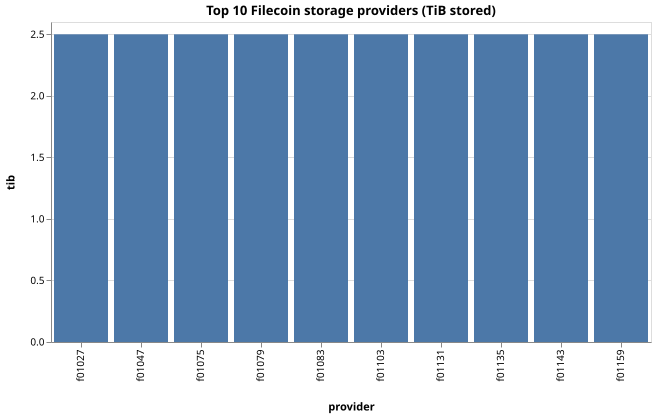

Top 10 providers by bytes stored

Top 10 (raw figures)
| rank | provider | tib_stored | deal_count | share |
|---|---|---|---|---|
| 1 | f01047 | 2.5 | 10 | 1.07% |
| 2 | f01103 | 2.5 | 10 | 1.07% |
| 3 | f01143 | 2.5 | 10 | 1.07% |
| 4 | f01131 | 2.5 | 10 | 1.07% |
| 5 | f01027 | 2.5 | 10 | 1.07% |
| 6 | f01135 | 2.5 | 10 | 1.07% |
| 7 | f01079 | 2.5 | 10 | 1.07% |
| 8 | f01083 | 2.5 | 10 | 1.07% |
| 9 | f01159 | 2.5 | 10 | 1.07% |
| 10 | f01075 | 2.5 | 10 | 1.07% |
Interpreting the numbers
The dataset under pnpm seed synthesises ~2,000 Filecoin deals across a hand-curated pool of providers — it is not real mainnet. The concentration number is therefore a shape check, not a measurement. To run this against live data: chainq pull --chain filecoin --from <epoch> --to <epoch> (the snapshot package wraps Filfox + Spacescan).
Cross-check with chainq_metric("filecoin_deal_count", filters={verified_deal: true}) to see whether Filecoin Plus changes the distribution.
Caveats
Filecoin epochs are 30-second slots, not unix seconds. Convert to wall-clock time with (epoch * 30) + 1598306400 (GENESIS_TIMESTAMP, 2020-08-24 22:00:00 UTC).
A provider with a small deal_count but a large tib_stored is hosting big pieces. Filtering by deal count alone misses these.
Reproducing this report
1. chainq_describe("filecoin.deals")
2. chainq_metric("filecoin_provider_storage", { dimensions: ["provider"], start_epoch, end_epoch })
3. chainq_chart_render({ type: "bar", x: "provider", y: "tib_stored", filename: "top-providers.svg" })
4. chainq_report({ title, filename: "filecoin-concentration.html", sections: [...] })